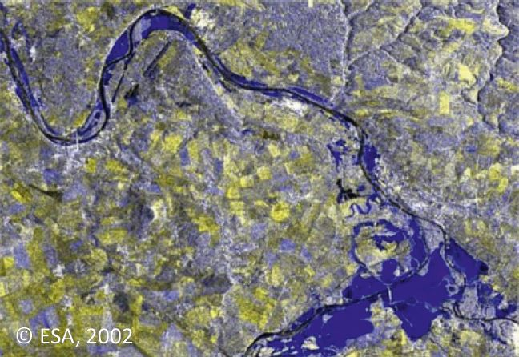
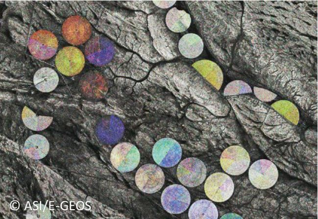
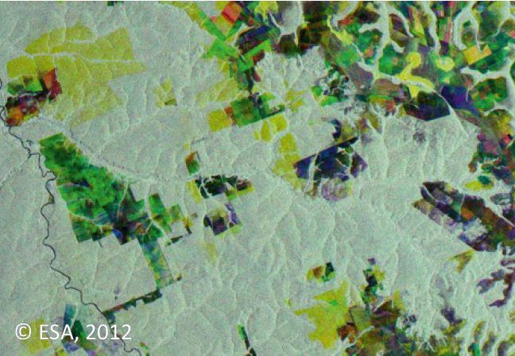
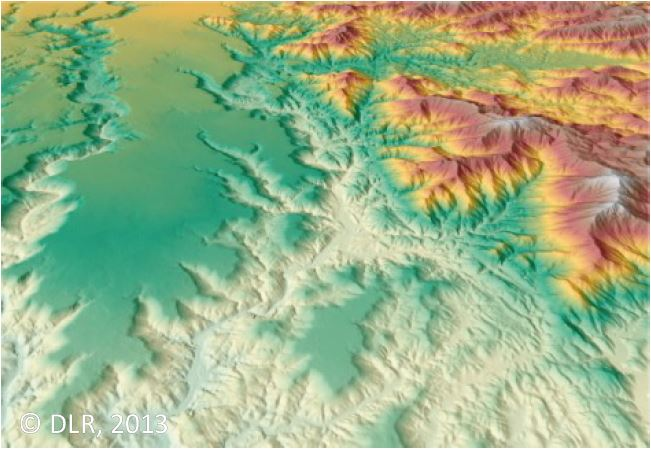
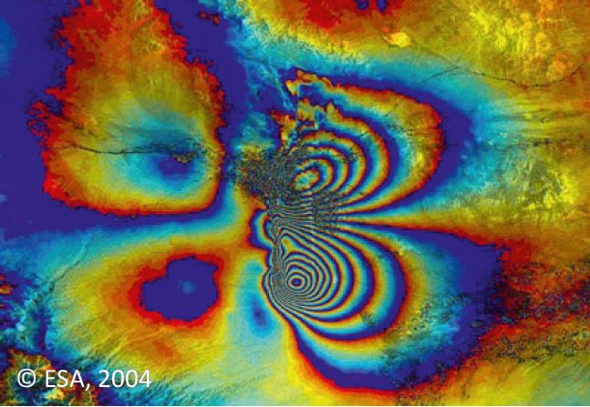

|
Содержание
|
Области применения радиолокационной съёмки Земли
Активное развитие орбитальной группировки спутников
радиолокационного зондирования Земли способствует
расширению областей применения радиолокационных
данных. В первое время радиолокационные данные
наиболее активно использовались при картографировании
тропических лесов и приполярных областей, изучении
океанических явлений. Сейчас они находят широкое
применение при решении задач в самых разнообразных
областях: гидрология и океанология, геология и вулканология, сельское и лесное хозяйство, добывающая
промышленность и транспорт и др.
 |
Топографическое картографирование
Пример 1, пример 2
|
Выявление пленочных загрязнений акваторий и обнаружение их источников
Пример 1, пример 2, пример
3
|
 |
 |
Изучение океанических явлений: внутренних волн, вихрей на водной поверхности и т.д.
Пример 1, пример 2
|
Изучение свойств морских льдов: определение положения кромки льда, сплочённости,
возраста и т.д.
Пример
1, пример 2, пример 3
|
 |
| 
|
Выявление территорий, подверженных затоплению
Пример 1, пример 2
|
Решение задач сельского хозяйства: классификация культур и определение стадий их
развития, оценка урожайности, определение влажности почв и т.д.
Пример 1, пример 2
|
 |
|  |
Решение задач лесного хозяйства: выявление вырубок, определение запасов фитомассы, высоты древесной
растительности и др.
Пример 1, пример 2, пример 3
|
Построение высокоточных цифровых моделей рельефа методами радиолокационной
интерферометрии и радарграмметрии
Пример 1, пример
2
|
 |
|  |
Выявление смещений земной поверхности и расположенных на ней объектов, вызванных землетрясениями,
просадками грунта в местах добычи полезных ископаемых и под зданиями и т.д.
Пример
1, пример
2
|
Наверх
|